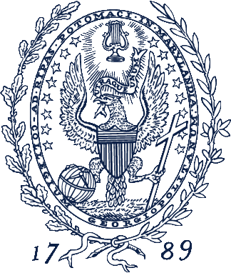
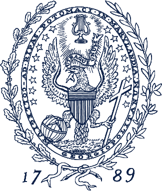

Coptic SCRIPTORIUM is a platform for interdisciplinary and computational research in texts in the Coptic language, particularly the Sahidic dialect. As an open-source, open-access initiative, our technologies and corpus facilitate a collaborative environment for digital research for all scholars working in Coptic. We provide:
- tools to process Coptic texts
- a searchable, richly-annotated corpus of texts using the ANNIS search and visualization architecture
- visualizations of Coptic texts
- a collaborative platform for scholars to use and contribute to the project
- research results generated from the tools and corpus
The SCRIPTORIUM is a collaborative, digital project created by Caroline T. Schroeder (University of the Pacific) and Amir Zeldes (Georgetown University). Our team is constantly growing.
We hope Coptic SCRIPTORIUM will serve as a model for future digital humanities projects utilizing historical corpora or corpora in languages outside of the Indo-European and Semitic language families. Read our Frequently Asked Questions for more information on the project, methodologies, and terminology.
 
